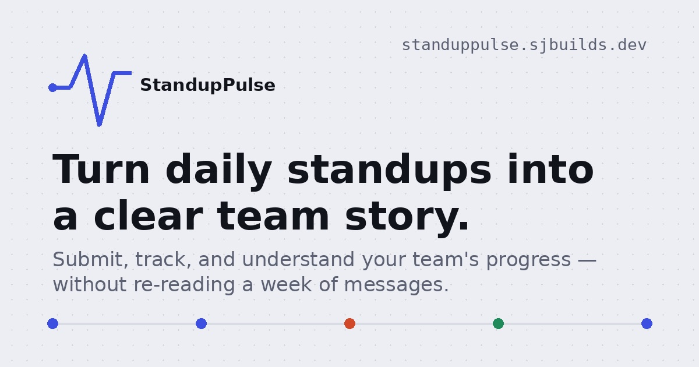
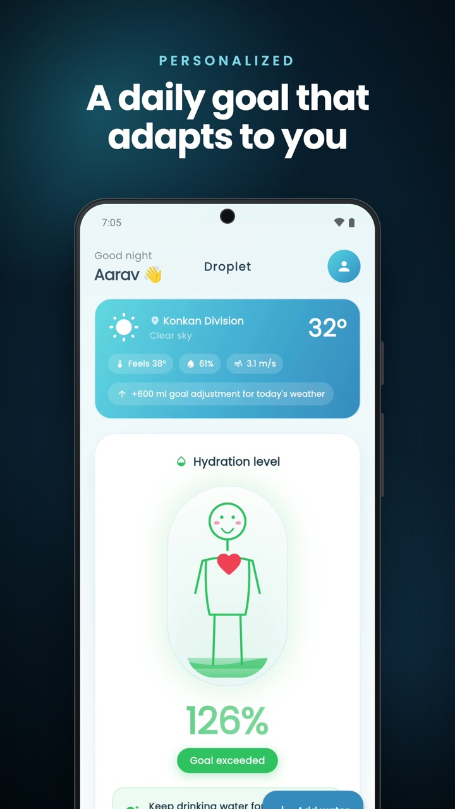
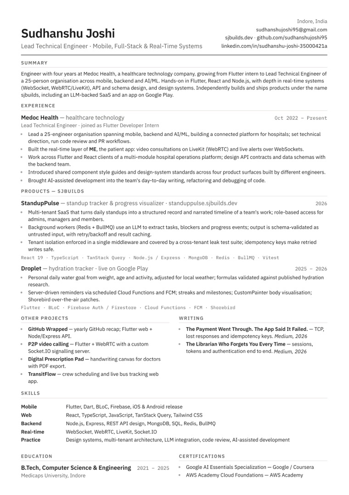

Patient app
ME
A portable, lifelong health record for patients. I built its real-time layer: video consultations and live alerts that reach patients and care teams as things happen.
Flutter · LiveKit / WebRTC · WebSocket
Time of day
Season
Auto follows your clock and India's seasons.
Developer & engineer · Indore, India · IST
Lead Technical Engineer at Medoc Health. I build software that hospitals run on, and ship my own products as sjbuilds.
Four years ago I joined Medoc as a Flutter intern. Today I lead 25 engineers across mobile, backend and AI/ML, and I still write code every day, mostly in Flutter, React, Node and real-time systems. Outside work I've shipped an LLM-backed SaaS and an app on Google Play, and I write long-form explainers about how everyday systems actually work.
Medoc Health, healthcare technology
Medoc builds a connected platform for hospitals in India, from patient apps to hospital operations. Here is the part I own.
Patient app
A portable, lifelong health record for patients. I built its real-time layer: video consultations and live alerts that reach patients and care teams as things happen.
Flutter · LiveKit / WebRTC · WebSocket
Hospital operations
The platform staff use to run a hospital day to day. I work across its Flutter and React clients and design the API contracts and schemas with the backend team.
React · Flutter · Node.js · API design
Design system
Four products built by different engineers now share component standards and style guides, so they look and behave like one product.
Component libraries · Style guides
Leadership
I set technical direction, run code review and PR workflows, and have made AI-assisted development part of how the team writes and debugs code.
25 engineers · 3 disciplines
Turns daily standups into a clear record of what a team actually did.
Once standups are scattered across Slack, memory and half-read messages, it gets hard to answer "what actually happened this sprint?". StandupPulse keeps every update structured from day one. Yesterday's items carry over, so you add today's and flag any blocker in about ten seconds. Managers see who has submitted and who is stuck, and the Visualizer turns any date range into a narrated timeline of how the work unfolded.
React 19 · TypeScript · Node / Express · MongoDB · Redis + BullMQ

A hydration tracker whose daily goal follows you and the weather.
Most water trackers give everyone the same eight glasses. Droplet works out a personal goal from your weight, age and activity level, then raises it on hot, humid days based on the weather where you are. You log what you drink and watch a hand-drawn figure fill up as the day goes on.
Flutter · BLoC · Firebase · Cloud Functions · FCM · Shorebird

Flutter web · Node
A Spotify-Wrapped-style recap of anyone's year on GitHub. The Express API fetches and aggregates activity, and the Flutter client tells the story.
Flutter · WebRTC
Real-time video calls, with my own Node + Socket.IO signalling server brokering offers, answers and ICE candidates.
Flutter · Canvas
A handwriting canvas for doctors: pen and eraser, stroke control, zoom, multiple pages, and export to image or PDF.
Flutter web
For bus operators: automates crew assignment, manages shift schedules and handovers, and tracks buses live on their routes.
Medium · Aug 2026 · Networking
How data travels, why TCP exists, what happens when a response is lost in transit, and how idempotency keys stop a lost response from becoming a double charge.
Read →Medium · Aug 2026 · Security
What "logging in" really means, why the web forgets you on purpose, sessions versus tokens, and what actually happens when a token is stolen.
Read →Recent on LinkedIn
All postsEverything above, on a single page.

Contact
Questions about a product or an article, or a project you'd like to build together: email gets the fastest reply.